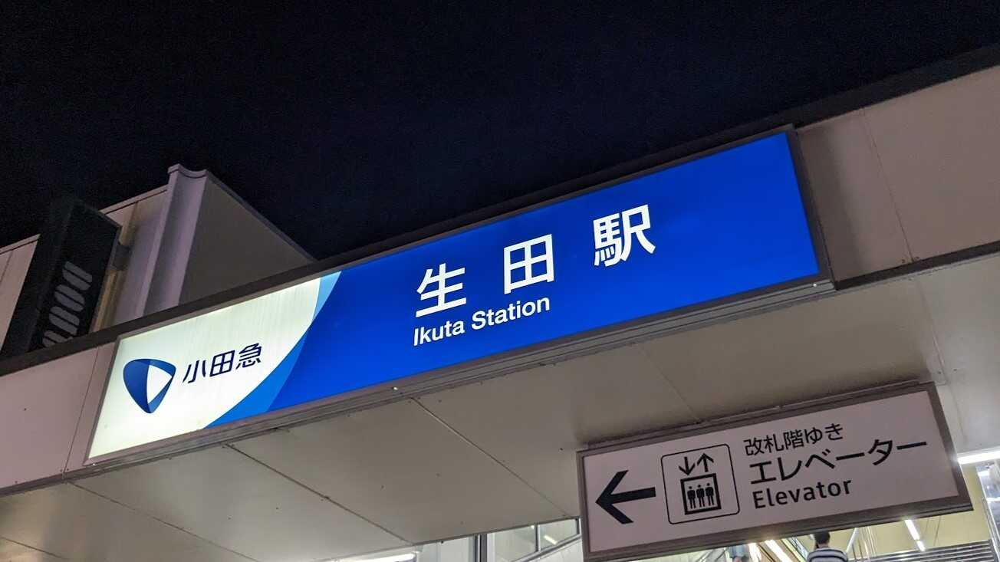

いきさつ
2023年9月24日、調布花火2023が開催されました。
調布花火2023
18:30～19:30の1時間です。
某サークルの撮影会(?)として、調布からちょっと離れた丘で見ることになりました。
※合宿費用の建て替えがあると聞いたのでお金持って行ったけど最後まで回収されることはなかった…
はなび撮りにいくかー
— ゆい (@yui__yuuki) September 24, 2023
17:00ごろ 調布駅
調布からKOで京王稲田堤まで、そこからバスで向かうルートがよさそうです。
駅に着いた瞬間(正確にはつく前からうすうす感じてたけど)、人の多さに仰天しました。
調布駅構内に警備員がめっちゃいました。人多すぎてエスカレーターが一時的に使えなくされたり、遅延しまくったりと地獄のようでした。しょうがないけど。
今日味スタでもなにかやってんのか
— ゆい (@yui__yuuki) September 24, 2023
地獄だな
人の波に飲まれながら電車に乗ってると、多摩川河川敷に大量の人がいるのが見えました。
まあ知ってた。
大量の人が京王多摩川で下車したので電車はだいぶすっきりしました。
17:07 京王稲田堤
京王稲田堤で降りたら17:12発のバスに乗ります。
17:14反対側のバス停にバスが来ました。
悲しいね。バス停上り下り間違えたてへ
— ゆい (@yui__yuuki) September 24, 2023
仕方ないので歩きます。
徒歩部ではないので徒歩に関する部分はカットしますが、渋滞してたので途中まで乗るはずだったバスと横並びで進んでました。
てくてくてく……
……
…
あの上が目的地です。頑張りましょう。帰ろっかな pic.twitter.com/AFXgmpCXYZ
— ゆい (@yui__yuuki) September 24, 2023
17:48 生田配水池展望広場
予定より15分ほど遅れて到着です。展望台につづく階段に大勢の人がカメラを持って待機してました。
階段に人があふれてるくらいなので、頂上はもう大変なことになってました。
ちなみに他の部員はすでに展望台でカメラ設置してました。
あと30分ありますが、急いで準備しましょうね。
※ジャンクで買った三脚、高さが足りずベンチの上に設置することに…後ろの人ごめん
生田配水池、5年前の200倍くらい人いるんだけどwww pic.twitter.com/wrvYM1J2wD
— あづみ (@DG_7D) September 24, 2023
18:30 開演
2kmほど離れていてアナウンスは聞こえないので、いきなり始まりました。
規模と迫力がすごかったですね。
花火撮影は初めてなのでくずデータを量産しつつ練習、タイムスケジュールを見ながら大物を狙い撃ちしました。


あと換算90㎜の望遠では画角が足りませんでした。来年までに75㎜くらいのレンズほしい。
でも意外といい感じの写真がとれたような気がします。もっと練習して来年こそは！
 失敗写真：バルブタイミング間違えてできたなにか
失敗写真：バルブタイミング間違えてできたなにか
印象に残っている花火集
-
学費（大スターマイン）
電通大の協賛で打ち上げられた花火らしい。大玉。
スターマインって何だよって思ったら「連射連発花火」のことらしい。
参考：『スターマイン』ってどういう意味？
今回、大スターマインは合計20発上がったぽい。多分学費 pic.twitter.com/raJ4BVBIq1
— ゆい (@yui__yuuki) September 24, 2023たぶん学費 pic.twitter.com/YRGllLRf7G
— あづみ (@DG_7D) September 24, 2023 -
匠の花火玉
でっかいのがいっぱい打ちあがった。音がよかった。
-
大玉50連発
大玉が50発打ちあがったらしい。特大が10分間くらい打ちあがり続けた。
大玉用に調整した画角に入らなかった。
19:30 終演
三脚の前にすわっていた人にタックルされ構図が破壊され、それを修正しようとするとフィナーレが始まりました。
終わったかと思ってたらいきなり始まってびっくり。ちゃんとタイムスケジュール読め（はい…）
※フィナーレ前の謎の空白時間のせいで、周りの人何人か帰ってたｗ
もう撮影はあきらめて見ることに専念しました。
最高にきれいでした。
 フィナーレ（笑）
フィナーレ（笑）
19:45 月&夜景撮影会
夜景がきれいだったので写真撮影会が始まりました。20℃くらいしかなくて寒かった。
 スカイツリー
スカイツリー
 都庁
都庁
 夜景きれい
夜景きれい
これは月 pic.twitter.com/QG6a75flRj
— ゆい (@yui__yuuki) September 24, 2023
20:30 生田駅
40分くらいいろいろ撮って満足したので帰宅します。
文明人なので徒歩は最小限、公共交通機関を使います。
小田急で生田駅～狛江駅、バスで調布まで向かいます。

20:52 狛江駅
バス待ちは撮った写真を整理し、ツイートするための時間です。
ある程度整理できたし、無事にバスに乗れたので勝利。
空いたバスのなかでゆっくり休みます。
………
……
…
調布駅が大混雑だったのを完全に忘れてました。敗北。